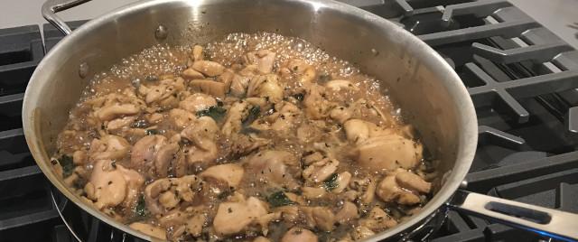

Thai Basil Chicken

Description
A savory and slightly salty dish brightened by the presence of basil.
Ingredients
- Sesame Oil, 2 tbsp, divided
- Garlic, 10 cloves, sliced
- Ginger, 1/4 cup, sliced
- Scallions, 3, chopped
- Chicken thighs, 1 pound, 1.5-inch cubes
- Mirin, 1/4 cup
- Soy sauce, 1/4 cup
- Sugar, 2 tbsp
- Basil leaves, 1 cup, thin strips
Steps
- Heat 1 tbsp sesame oil in large pot over medium-high heat.
- Add garlic, ginger, and scallions. Cook 2 minutes.
- Add chicken thighs, mirin, soy sauce, sugar, and 1 tbsp sesame oil.
- Bring to a simmer until chicken is cooked and liquid is almost gone, about 15 minutes.
- Stir in basil leaves and serve over rice.